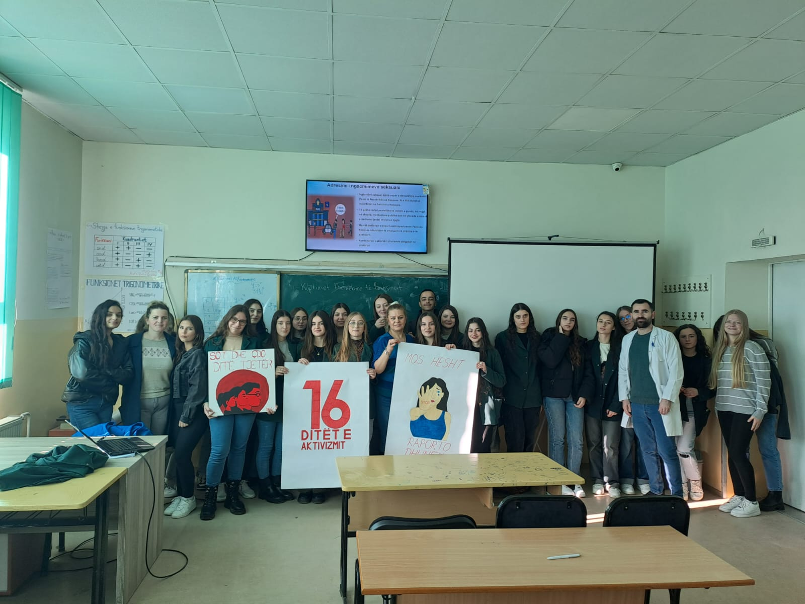
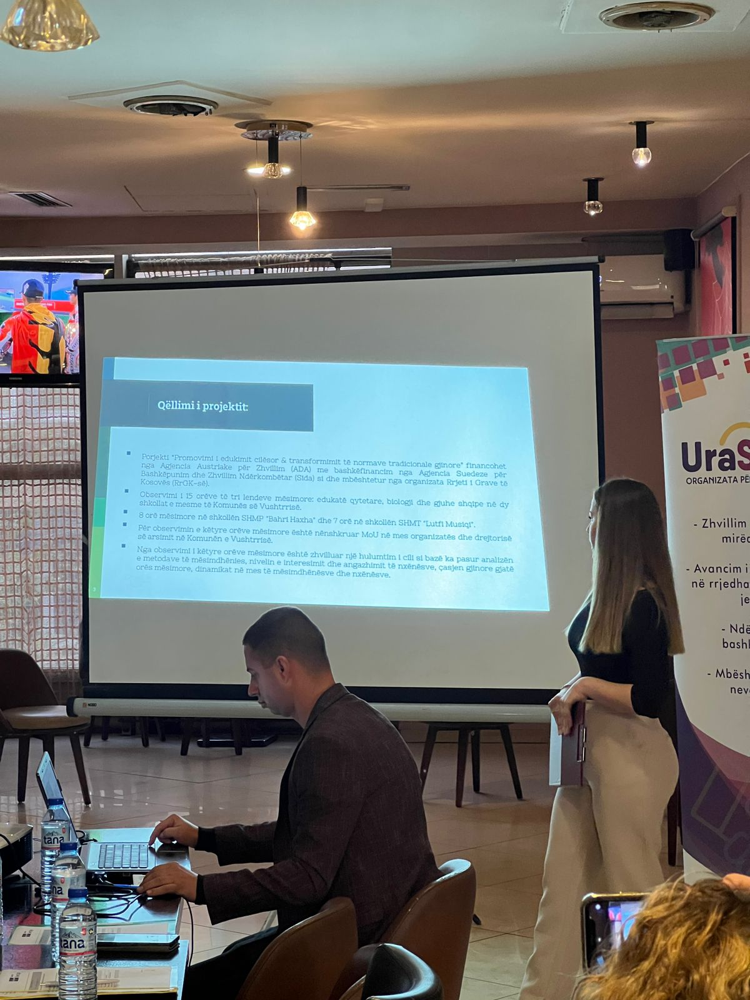
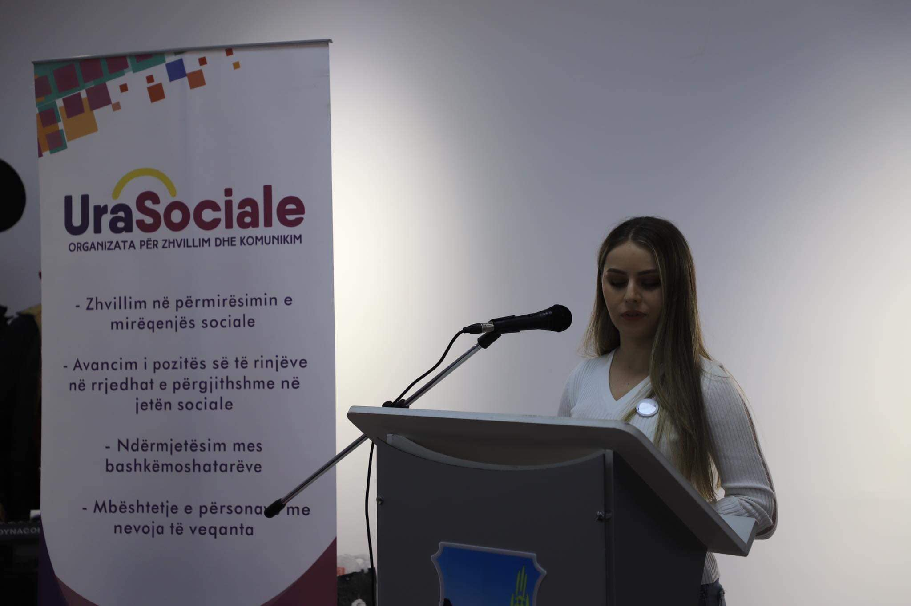
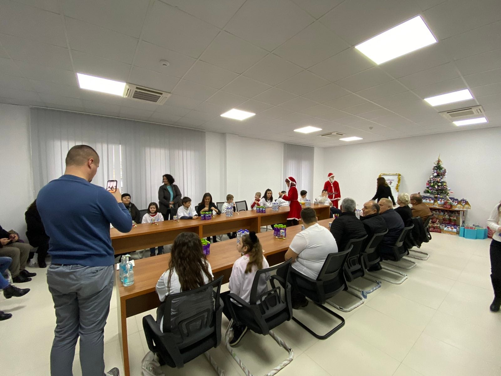
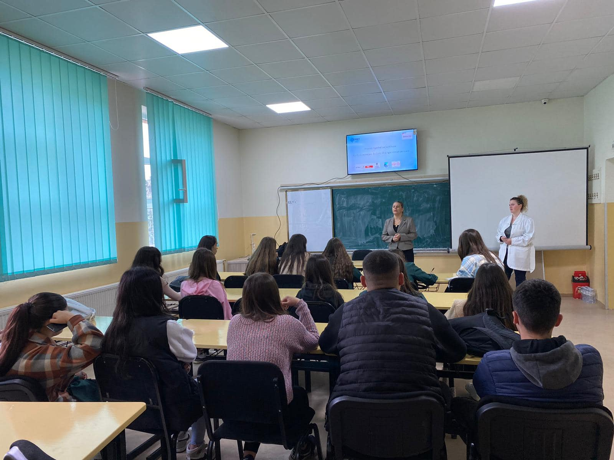
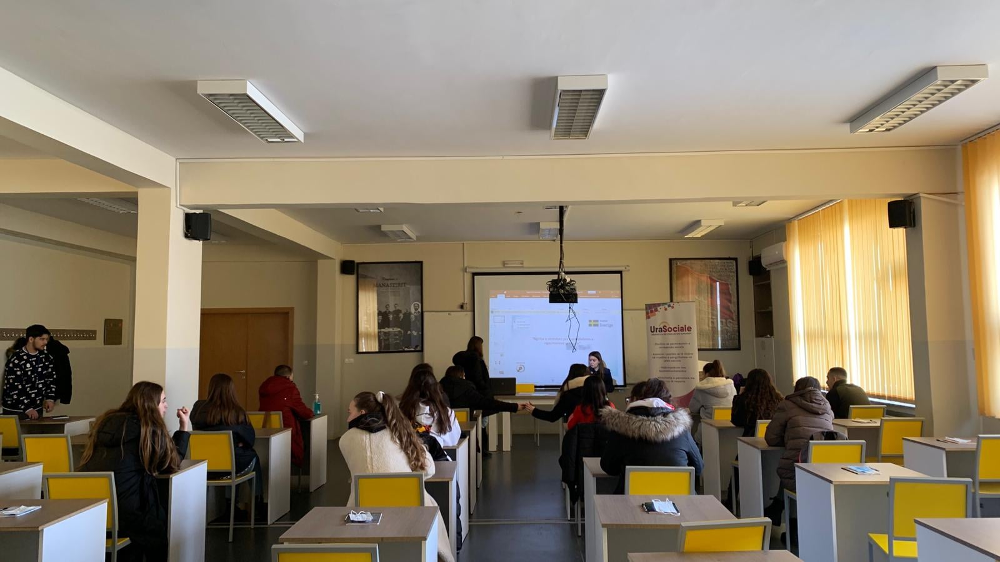
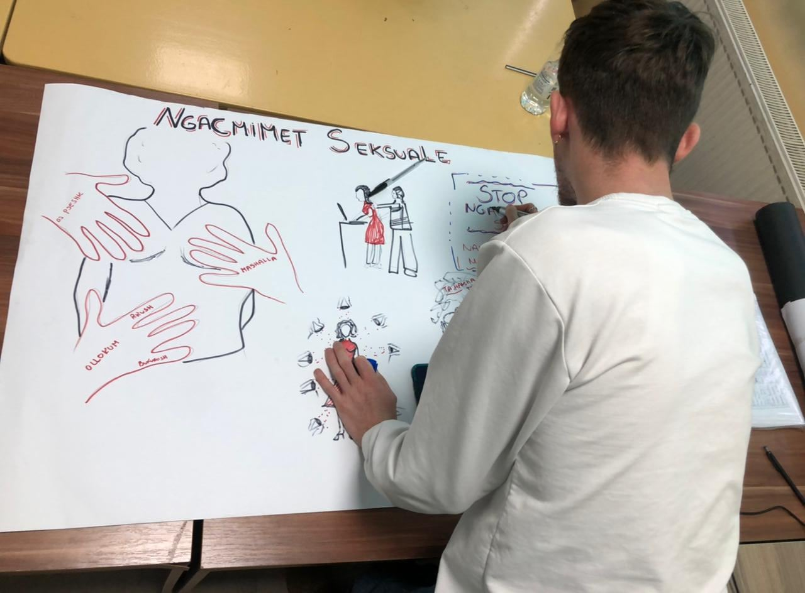
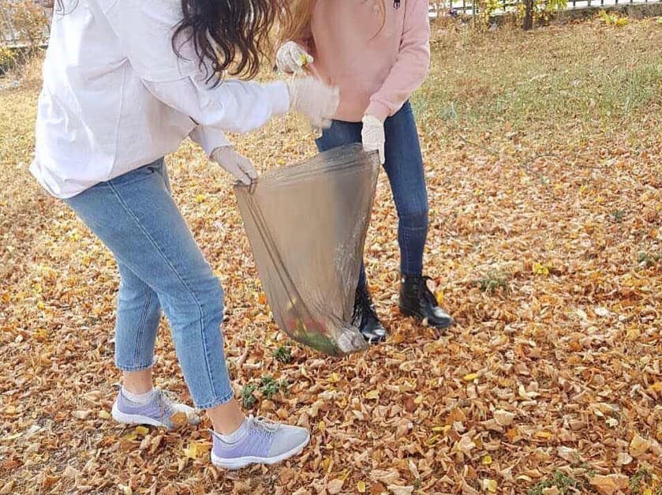

Aktivitetet
Arkivë nga Ura Sociale.
Një pasqyrë e aktiviteteve të realizuara nga Ura Sociale, që prezanton punën tonë me komunitetin dhe bashkëpunimet me partnerë të ndryshëm.
Arkiva
Filtro aktivitetet sipas fushes se punes.

18 Dhjetor 2023
16 Ditë të Aktivizmit kundër Dhunës në Baza Gjinore
Organizata “Ura Sociale” ka mbajtur ligjërata vetëdijesuese me të rinjtë e Komunës së Vushtrrisë.
Ligjëratat synuan të informojnë dhe frymëzojnë të rinjtë për rëndësinë e barazisë gjinore, respektit dhe parandalimit të çdo forme të dhunës në familje dhe dhunës me bazë gjinore.

30 Nëntor 2023
Promovimi i edukimit cilësor dhe transformimit të normave tradicionale gjinore
Aktiviteti përfshiu observimin e orëve mësimore në shkollat e mesme “Bahri Haxha” dhe “Lutfi Musiqi” në Vushtrri. Të gjeturat u ndanë me mësimdhënës, drejtorë dhe përfaqësues të Drejtorisë së Arsimit, me qëllim diskutimin dhe avokimin për përmirësimin e metodave të mësimdhënies.
Ky aktivitet u mbështet nga Fondi i Grave të Kosovës, përmes nismës së RrGK-së, financuar nga ADA dhe bashkëfinancuar nga Sida.

26 Nëntor 2022
Dita Ndërkombëtare e Personave me Nevoja të Veçanta
Për Ditën Ndërkombëtare të Personave me Nevoja të Veçanta, OJQ “Ura Sociale” së bashku me Komunën e Vushtrrisë ka organizuar aktivitete të ndryshme të cilat si qëllim kryesor kanë pasur integrimin e nxënësve me nevoja të veçanta në shoqëri.
Përmes lojërave të ndryshme, pikturimit, vallëzimit dhe argëtimit, ne jemi munduar të krijojmë një ditë sa më speciale për ta.

3 Dhjetor 2021
Të gjithë jemi të barabartë
3 Dhjetori 2021 është Dita Ndërkombëtare e Personave me Aftësi të Kufizuara. Pikërisht në këtë ditë të veçantë, OJQ “Ura Sociale” ka implementuar projektin “Të gjithë jemi të barabartë”.
Ky projekt është i mbështetur nga DSHPS dhe DRKS në Komunën e Vushtrrisë.
Qëllimi kryesor i këtij projekti është që të pranohen diversitetet dhe të merren masa për një shoqëri të barabartë. Kjo është munduar të realizohet me pjesëmarrjen e fëmijëve me nevoja të veçanta në aktivitete të ndryshme kulturore në qytetin tonë, duke përfshirë edhe argëtime me lojëra të ndryshme, muzikë dhe pikturim.

20 Tetor 2022
Together we build hope
Organizata “Ura Sociale” implementoi 3 ligjerata në kuadër të nënprojektit "Together we build hope".
Ky nënprojekt është pjesë e projektit M4Y i cili mbështetet nga Qeveria e Japonisë nëpërmjet (JSDF) dhe administrohet nga Banka Botërore.
Nënprojekti "Together, we build hope" mbështetet gjithashtu nga Komuna e Vushtrrisë dhe si qëllim kryesor ka ofrimin e shërbimeve psikologjike dhe sociale për komunitetin, kryesisht nxënësit e shkollave të mesme të Komunës së Vushtrrisë.

14 Janar 2022
Edukimi seksual dhe raportimi i rasteve
Me datë 14 Janar 2022 OJQ “Ura Sociale” implementoi Aktivitetin 4 në kuadër të projektit “Ngritja e vetëdijes për parandalimin e ngacmimeve seksuale”. Pjesëmarrës në këtë aktivitet ishin nxënësit e shkollës së mesme Gjimnazi “Eqrem Çabej”.
Qëllimi kryesor i këtij aktiviteti ka qenë edukimi dhe informimi i të rinjëve për ngacimet seksuale, po ashtu se si të bëhet raportimi i këtyre rasteve në institucionet përkatëse.

18 Dhjetor 2021
Ngritja e vetëdijes për parandalimin e ngacmimeve seksuale
Me 18 Dhjetor 2021 OJQ “Ura Sociale” ka implementuar ligjeratën e dytë të Aktivitetit 3 në kuadër të projektit “Ngritja e vetëdijes për parandalimin e ngacmimeve seksuale”. Pjesëmarrës në këtë aktivitet ishin nxënës të shkollës së mesme SHMP "Bahri Haxha" Vushtrri.
Qëllimi kryesor i këtij aktiviteti ka qenë edukimi dhe informimi i të rinjëve për ngacimet seksuale, po ashtu se si të bëhet raportimi i këtyre rasteve në institucionet përkatëse. Projekti është i mbështetur nga RrGK dhe përkrahur nga ADA me Sida.

6 Tetor 2021
Pastrimi vullnetar i oborreve të shkollave
Aktiviteti me të rinjët e Vushtrrisë për pastrimin e oborrit të shkollave në mënyrë vullnetare.
Jemi shumë të lumtur që të rinjët tanë gjithmonë shprehin dëshirën dhe vullnetin për të dhënë kontributin e tyre në shoqëri.